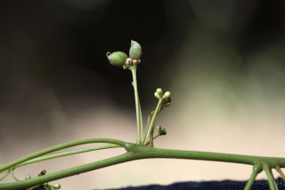
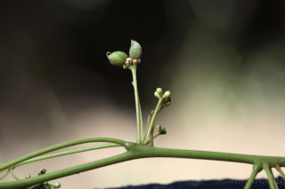
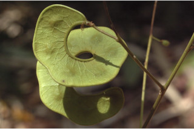
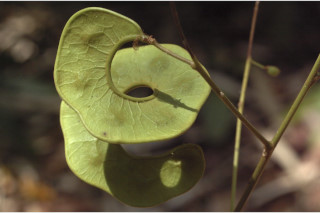

| Leaves : | Leaves compound , bipinnate , alternate , spiral ; stipule caducous ; rachis 10-11 cm long, pulvinate , round sessile gland along the upper side of the primary and in between the leaflets of secondary rachis , puberulent ; petiolule 0.4-0.5 cm long; pinnae 1-2 pairs, opposite , lower pinnae shorter than terminal ; leaflets 4-8, opposite , increasing in size towards apex , 4-14.5 x1.8-5.5 cm, usually narrow elliptic to ovate , caudate - acuminate with mucronate tip, base asymmetric or cuneate to acute , margin entire , chartaceous , puberulent at least when young; midrib raised above; secondary_nerves 8-14 pairs; tertiary_nerves weakly percurrent or broadly reticulate . |


 

 
